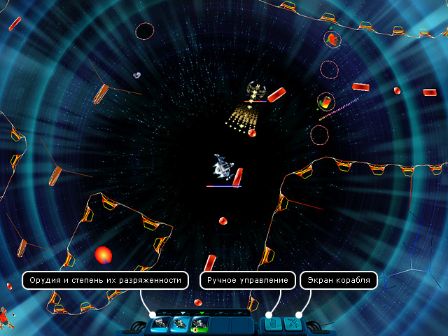
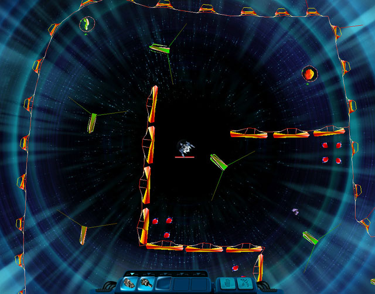

Руководство рейнджера
> Экран аркадной битвы
|
Руководство рейнджера
> Экран аркадной битвы
|
| Экран аркадной битвы Все "черные дыры", образующиеся в населенных системах, ведут в гиперпространство - таинственное и опасное место, где действуют иные законы физики, а разум подвергается серьезному испытанию. Кроме того, всех рискнувших влететь в черную дыру ожидает нешуточный бой с превосходящими силами противника. Игроку потребуется вся его ловкость и умение, чтобы одолеть засевших там врагов. Всего в игре 16 гиперпространственных карт, причем 10 из них разработаны специально для аддона. Бой проходит в режиме реального времени, все управление осуществляется с клавиатуры. Чтобы двигаться, используйте клавиши Вверх-Вниз-Влево-Вправо. Стрельба осуществляется клавишами Ctrl и Shift. Если управление кораблем кажется вам слишком сложным, можно включить режим автопилота, нажав клавишу А - тогда ваш корабль будет летать и стрелять самостоятельно. Однако нет никакой гарантии, что такой бой закончится в вашу пользу! |

| Каждое орудие имеет время перезарядки. Как только текущее орудие разрядится, сразу будет произведено автоматическое переключение на следующее. Можно переключаться между орудиями вручную, нажимая клавиши с цифрами от 1 до 5. Орудия в игре различаются по своим параметрам, и если сейчас удобнее использовать одно орудие, то через секунду может понадобиться уже другое. Постоянно переключаться между ними вручную неудобно, так как бой проходит стремительно. Чтобы сделать процесс переключения более быстрым, перед боем орудия можно поделить на группы. По умолчанию все орудия записаны в первую группу, стрельба из них осуществляется клавишей Ctrl. Щелчок правой кнопки мыши по орудию меняет его группу, при этом визуально энергия орудия окрашивается в другой цвет. Орудия второй группы стреляют при нажатии клавиши Shift. Использование двух групп позволяет умелому игроку вести бой гораздо эффективнее. Активно используйте в боевых действиях естественные препятствия гиперпространства.  Если вас уничтожат в бою, то ваши родные получат соболезнования и компенсацию, а для вас игра будет окончена. Поэтому, собираясь вступить в бой, не забудьте сохраниться перед входом в черную дыру. Как покинуть аркадный бой: Вам необходимо убить всех врагов на данной карте! Лишь очень немногие карты имеют возможность отступления. После гибели всех врагов, вы увидите сообщение о победе. Все выпавшие из них вещи уже будут автоматически перемещены вам в трюм. Нажмите клавишу Esc, пробел или клик мыши для выхода. Аркадные бонусы Во время сражения вам будут попадаться различные аркадные бонусы, способные очень сильно повлиять на ваши возможности. Бонусы представлены в виде иконок внутри шариков и автоматически начинают свое действие при пролете над ними. Все бонусы имеют свой срок действия. Когда бонус взят, внизу экрана появляется соответствующий значок и время действия бонуса (в виде часиков). Имейте в виду, что ваши противники тоже не будут зевать, и вполне могут успеть к какому-нибудь бонусу раньше вас. Бонусы бывают как положительные, так и отрицательные.
Захват предметов Находясь в гиперпространстве, вы можете поднимать на борт своего корабля дрейфующие там минералы или другие предметы, если вы сами их сначала выбросите. Примечание. После убийства всех врагов на карте информационное окно с текстом поздравления убирается клавишей Tab. Чтобы подобрать их, вы должны: • подлететь поближе к предмету и щелкнуть по нему мышкой; или • пролететь над предметом, удерживая нажатой клавишу Alt. Внимание! После победы вы сможете подобрать предметы только с клавишей Alt, иначе на клик мыши сработает выход из режима аркадного боя. Примечание. Предмет не будет поднят на борт в одном из трех случаев: 1. Он находится вне зоны действия захвата. В этом случае подлетите поближе к предмету и повторите попытку. 2. Нет свободного места на корабле. Чтобы освободить место на корабле от ненужных грузов, воспользуйтесь кнопкой "Корабль" (S). 3. Грузоподъемности вашего захвата недостаточно для притягивания столь большого предмета. Чтобы исправить положение, надо приобрести более мощный захват. |